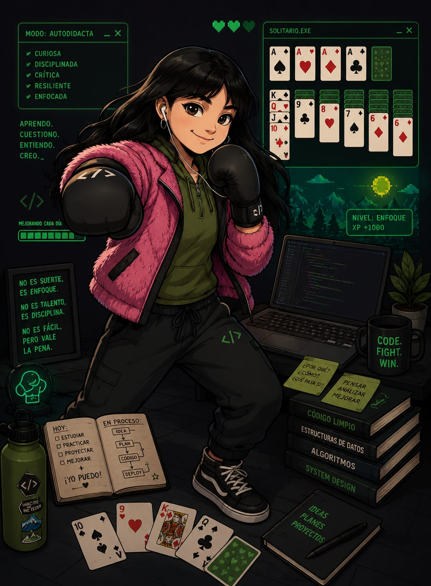

nivel: enfoqueSoy una desarrolladora Full Stack Jr. apasionada por la tecnología, la automatización y la creación de soluciones que generen un impacto positivo en las personas. Me especializo en desarrollo web con HTML, CSS, JavaScript, PHP y MySQL, además de explorar herramientas de IA generativa y automatización.
Me motiva aprender constantemente, trabajar en equipo y crear proyectos innovadores que combinen tecnología y experiencia de usuario.
No es suerte, es enfoque.
No es talento, es disciplina.
No es fácil, pero vale la pena.